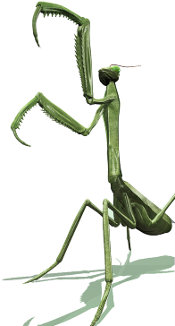

Training¶
These tutorials and training courses are designed to give you a step-by-step guide to how to use some of the basic features of Mantid. The initial sections deal with some of the fundamental functions that are required for (almost) any use of of Mantid. We then build up to more bespoke functionality, providing the tools that you need to manipulate Mantid for your particular problem. We also include some more instrument specific training, provided by various sites.
Mantid basic course, runs through functions such as loading, plotting, exploring and saving data. At the end of this course you can start to use Mantid independently.
Python introduction is a crash course in the Python that you need for scripting in Mantid.
Python in Mantid introduces how to interact with Mantid through Python. Some knowledge of Python is assumed; if you have completed the Python introduction course you are well equipped for this course.
Extending Mantid with Python demonstrates how you can become a power user and really stretch the capabilities of Mantid, by developing your own scripts.
Sections:
{kind=link}